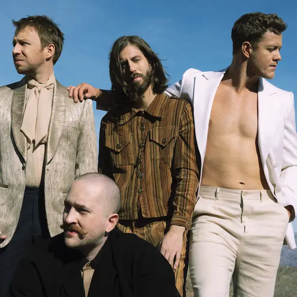
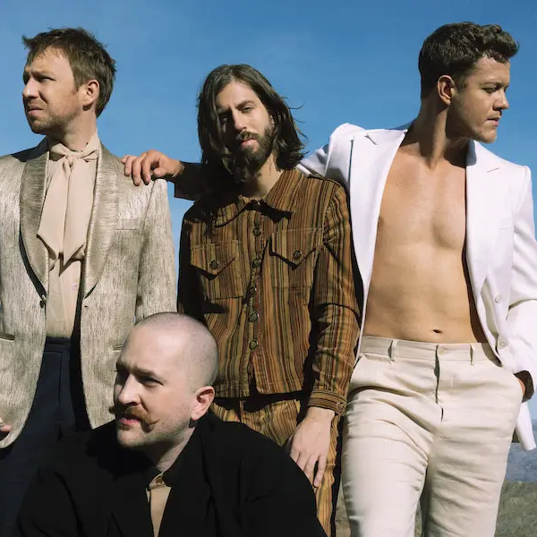
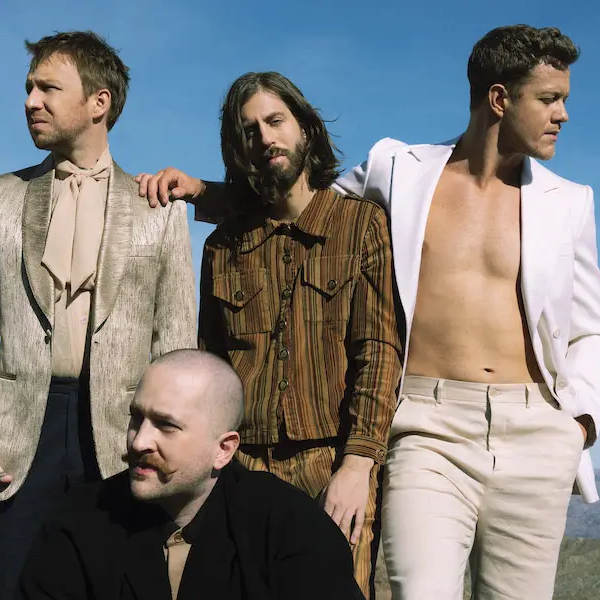

Imagine Dragons es una agrupación musical originaria de Estados unidos que oscila entre los géneros del Rock alternativo, el Indie Rock y el Pop Rock.

Los comienzos musicales de Imagine Dragons se remontan al 2008,
cuando Dan Reynolds y Andrew Tolman se conocieron en la Universidad Brigham Young, en donde los dos estudiaban.
Para 2009, la banda fue llamada para reemplazar a la agrupación Train en el Bite of Las Vegas Festival,
pues su vocalista, Pat Monahan, se había enfermado. Así, Imagine Dragons se presentó ante un público de más de 26 mil
personas y consiguió los reconocimientos de Mejor Banda Indie Local, entregado por Las Vegas Weekly; Mejor CD de 2011, de las Vegas SEVEN;
Vegas Music Summit Headliner, del 2010; y Newest Must See Live Act, entregado por Las Vegas CityLife.
La parte sensible de la banda, se deja notar en la creación de una fundación para ayudar a jóvenes con cáncer en el año 2013,
y la llamaron “Tyler Robinson Fundation”, la canción titulada “Demons” fue en base a esta experiencia,
en el videoclip de la canción aparece Tyler Robinson en el final cantando la canción “It's Time” junto con Dan Reynolds. . De igual forma se asociaron con MTVU para ayudar a elegir a cuatro beneficiarios de becas Fulbright-mtvU
Historia de Imagine Dragons
26/Marzo/2023 | America Ivon Holguin Martinez | Preparatoria #15 Florida